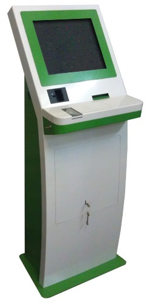

Існуючі аналоги Терміналу
Платіжний термінал ( self - service terminals , SSTs ) - апаратно-програмний комплекс, що забезпечує прийом платежів від фізичних осіб в режимі самообслуговування. Для платіжного терміналу характерна висока ступінь автономності його роботи. Контроль за роботою можна проводити через Інтернет.
Платіжний термінал призначений для:
- прийому платежів за послуги мобільного зв'язку, комунальні послуги, Інтернет-провайдерів, в рахунок погашення банківських кредитів;
- поповнення особових рахунків в платіжних системах, рахунків банківських карт.
Подібні термінали ділять на два основних типи:
- Платіжні термінали для приміщень (бувають підлогові, настінні, вбудовувані, настільні ).
- Вуличні платіжні термінали (бувають настінні, вбудовувані і встановлювані як окремо стоять стійки).
Склад комплексу: До складу терміналу входять:
- металевий або метало- пластиковий корпус, в який вбудований комп'ютер,
- TFT монітор (зазвичай з сенсорним вандалостійкі екраном),
- пристрій безперебійного живлення,
- купюроприймач,
- чековий принтер,
- клавіатура (у разі відсутності сенсорного екрану).
Інструкцію до реально існуючого терміналу з продажу квитків Ви можете завантажити за наступним посиланням (на російській мові).